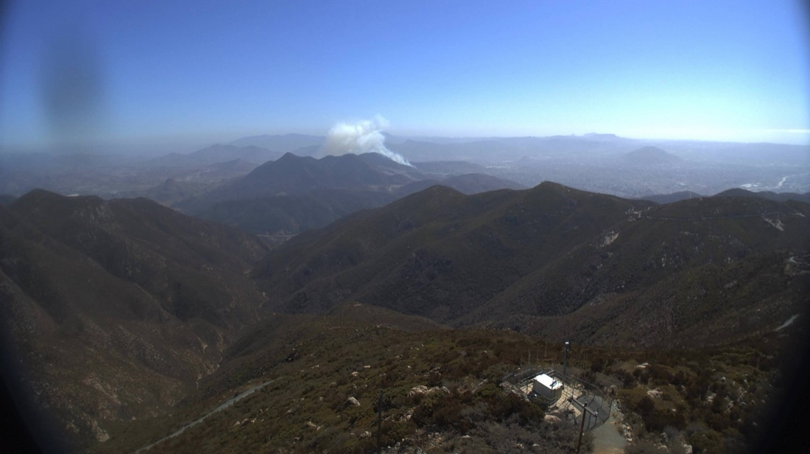
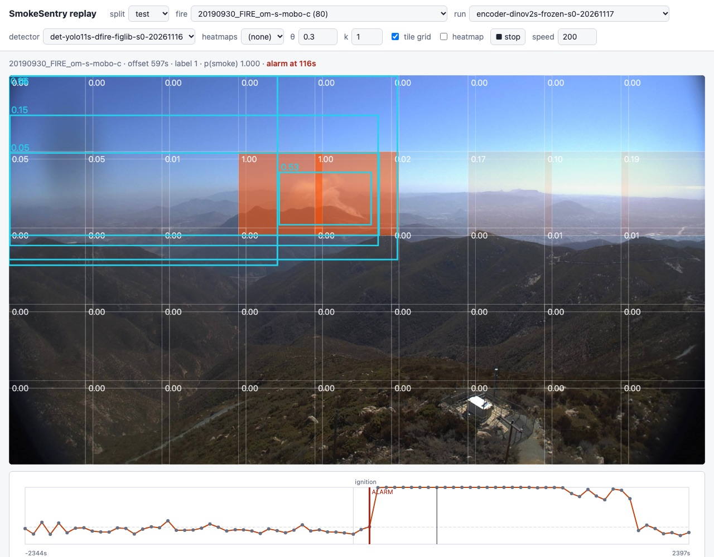

Bars: frames per split (test2 = 15,440). Fires hashed into splits with seed 255; all cameras of a fire stay together. Labels are per frame (offset ≥ 0 = smoke); no smoke masks are public.

Orange: the two tiles our encoder scores 1.0, ten minutes after ignition (test fire).
Encoder and temporal heads, early stop on val average precision.
Frame threshold, and the alarm: k frames in a row with p ≥ θ.
A temporal model may not raise more alarms than the single-frame baseline.
45 runs after the freeze; settings recomputed from val predictions only.
Frame → overlapping 224 px tiles
One feature vector per tile
Heads read the feature cache only
θ / k on the smoke score
If the encoder does not represent smoke well, later stages cannot invent ranking.
TakeawayGrey = MobileNet mnv3l-v2 · Teal = frozen DINOv2 dinov2s-frozen-v1 · seed 0 only
Image-level MIL had no positive tile supervision. Prefer AP / ROC over F1.
…-20261117
real best.pt
DinoVisionTransformer
not the offline stub
D = 384
patch tokens 256 × 384
(81, 45, 384) float16
C4 metadata OK
GPU ms / frame (45 tiles). CPU full pipeline ≈ 0.88 s. Not Manav’s laptop.
Frozen DINOv2 is the stronger one-seed proxy encoder.
Pipeline stays real-time for ~1 frame / minute cameras. Formal 3×3 E1 was cut — no production-ready claim.
One frame = 45 tiles. Mean of 200 timed runs after 50 warm-ups; forward pass only (no decode or tiling).

om-s, 30 Sep 2019: developing plume
Holyflareup, 2018: low cloud before ignition
Riverfire, 2019: 120 s gap at ignition